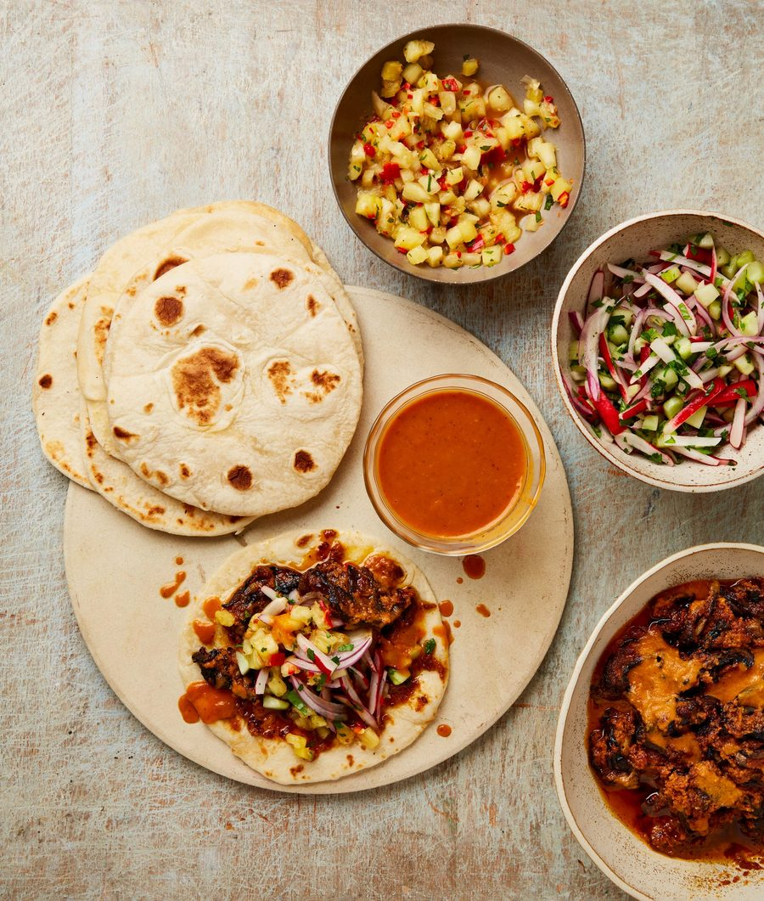

Tortillas with pico de gallo and pineapple salsa

I love how versatile tortillas are, especially when they are paired with a bunch of different accompaniments, and ideally something fresh, something spicy and something warm. Of course, store-bought tortillas are always an option, but there’s nothing quite like a warm tortilla straight out of the pan. Serve with the chipotle braised mushrooms and big spoonfuls of pico de gallo and pineapple salsa.
For the flour tortillas
For the salsa
For the pico de gallo
To make the tortillas, put the flour, baking powder, soured cream, 125ml room-temperature water and half a teaspoon of salt in the bowl of a stand mixer fitted with the dough hook. Knead on medium speed for six minutes, scraping the sides as you go, until fully incorporated. After this time, when the dough has started to come together, add a third of the butter and knead for a minute to incorporate. Repeat twice more, adding a third of the butter at a time and kneading for a minute after each addition, then increase the speed to medium-high and knead for three more minutes. The dough should by now be smooth, bouncy, slightly tacky to the touch but not sticking to your fingers and it will feel almost too soft to handle.
Pour the oil into a medium bowl. Lightly flour your hands, gently form the dough into a ball, then put in the bowl and roll in the oil just to coat. Cover with a plate and leave to rest for an hour.
While the dough proves, make the salsa. Put the chilli and a quarter-teaspoon of salt in a mortar and crush until it’s broken down but still slightly chunky. Stir in the ginger and pineapple. Put the vinegar, sugar and a tablespoon and a half of water in a small saucepan on a high heat. Once it’s boiling, stir in all the pineapple mixture, then take off the heat and leave to cool.
Once the dough has rested, tip it out on to a lightly floured worktop. Divide into eight equal-sized pieces weighing about 50g each and roll into golf ball-sized balls.
Put a large cast-iron pan on a medium-high heat. Using a rolling pin, roll one of the balls into a 2mm-thick x 15cm circle, using extra flour sparingly and only if necessary – don’t worry if it’s not a perfect circle. Carefully lift the tortilla, lay it in the hot pan and cook for 45-60 seconds on each side, until brown spots start to appear. Lift out, wrap in a lightly damp tea towel, then repeat with the remaining dough balls. Once they’re all cooked and wrapped in the towel, the tortillas will keep warm for about 30 minutes; otherwise, they’ll need reheating, either in a low oven or gently in the pan.
Just before serving, put all the ingredients for the pico de gallo in a medium bowl, add a quarter-teaspoon of salt and toss gently to combine. Stir the crushed peppercorns and chopped coriander into the salsa, then decant into a second medium bowl.
Serve the tortillas warm with the two condiments alongside, either with the braised mushrooms or your alternative filling of choice.